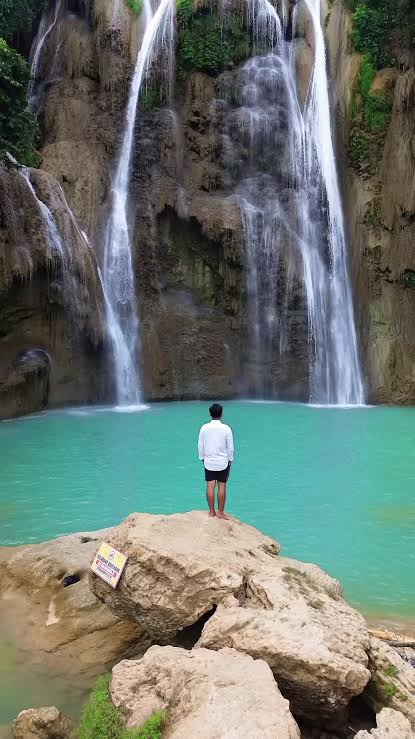
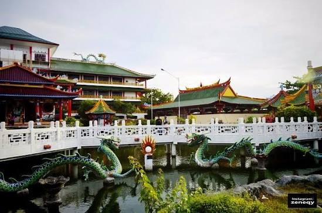
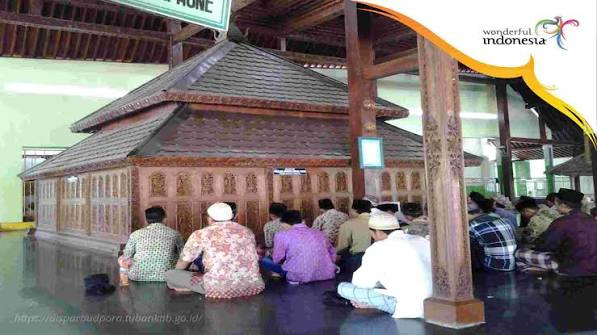
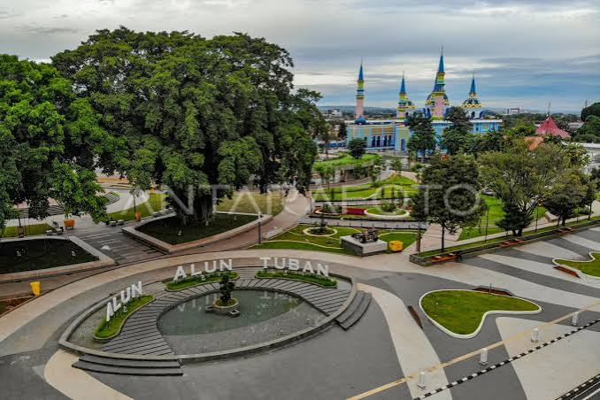
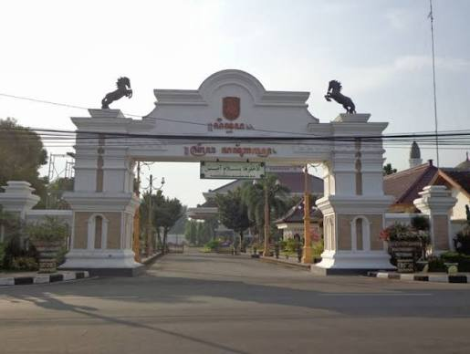
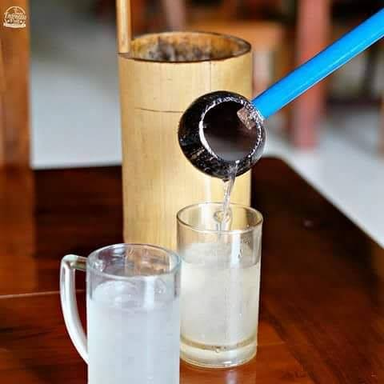
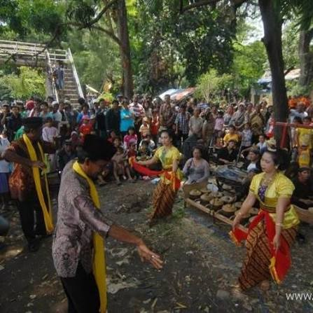

Alam
Goa Akbar
Goa kapur di tengah kota dengan lorong-lorong berstalaktit. Mudah dijangkau dari alun-alun.
Pilih kategori untuk menyaring tempat wisata.
Goa kapur di tengah kota dengan lorong-lorong berstalaktit. Mudah dijangkau dari alun-alun.

Pantai di bekas pelabuhan lama Tuban. Cocok untuk melihat matahari terbenam di Laut Jawa.

Makam salah satu Wali Songo yang ramai dikunjungi peziarah dari berbagai daerah.

Air terjun bertingkat di Kecamatan Singgahan, dikelilingi perbukitan yang sejuk.

Klenteng bersejarah di dekat pelabuhan dengan arsitektur khas Tionghoa.

Goa di Kecamatan Rengel yang dihuni banyak kelelawar dan dialiri sungai bawah tanah.

Pantai yang tenang di pesisir Tuban, cocok untuk bersantai bersama keluarga.

Masjid besar di sisi alun-alun kota, bersebelahan dengan kompleks Makam Sunan Bonang.

Makam penyebar Islam di tanah Jawa, berlokasi di Desa Gesikharjo, Kecamatan Palang.

Museum di pusat kota yang menyimpan koleksi sejarah dan budaya Tuban.

Kain tenun dan batik tulis khas Kecamatan Kerek. Pengunjung bisa melihat proses pembuatannya.

Makam ulama penyebar Islam di Desa Bejagung, Kecamatan Semanding. Ramai dikunjungi peziarah.

Makam ulama yang berada tidak jauh dari Bejagung Lor. Biasanya diziarahi bersamaan.

Pusat kota lama Tuban. Masjid Agung dan Makam Sunan Bonang berada di sekitarnya.

Pendopo kabupaten dengan arsitektur Jawa, tempat berlangsungnya berbagai acara resmi daerah.

Minuman khas Tuban dari nira pohon siwalan. Legen rasanya manis, sedangkan tuak sudah difermentasi.

Tari tradisional yang masih hidup di Tuban dan biasa tampil di acara desa.